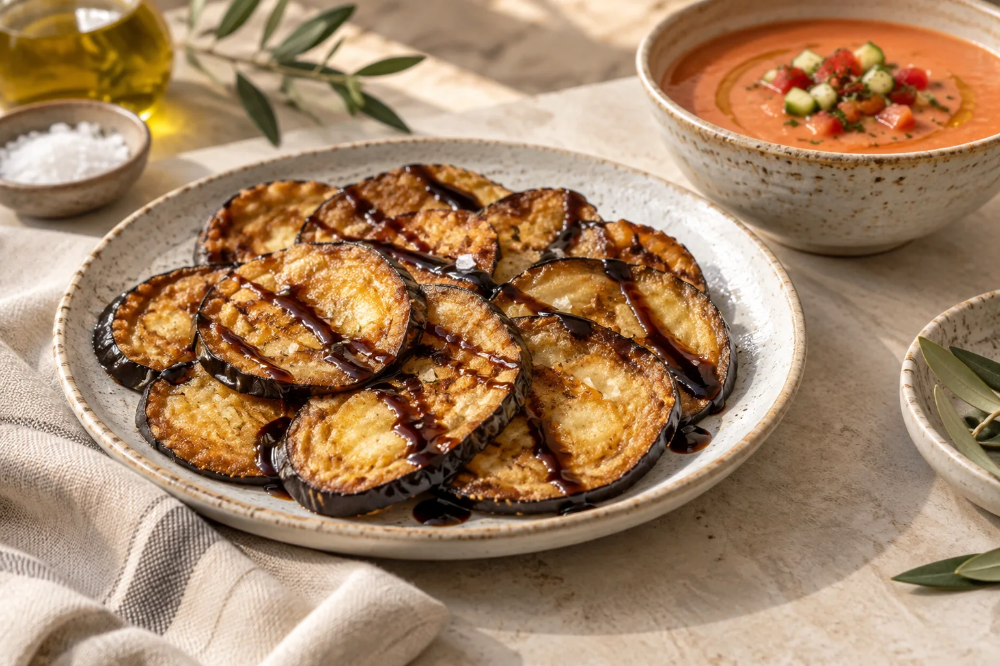

01
Para zarpar
Pan y aperitivo: 1,50 € por persona.
Jamón ibérico 100% bellota Beher Oro
28.00 €Queso manchego
Media9.00 €Ración14.00 €Ensaladilla rusa de gambas
9.50 €Berenjenas fritas con miel de caña
9.50 €Ensalada de pimientos asados a la leña
9.50 €Ensalada mixta de la casa Cerdán
14.95 €Tomate azul con aguacate y melva
15.50 €Ensalada de mango, frutos rojos y queso de cabra
16.50 €Tartar de salmón
18.50 €Tartar de atún rojo
24.00 €Croquetas de rabo de toro
13.50 €
02
Nuestras sugerencias
Pan y aperitivo: 1,50 € por persona.